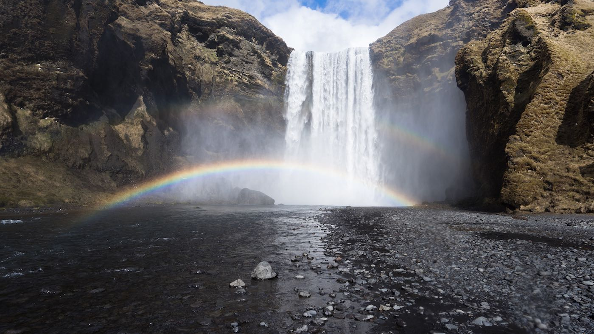

水
核能廢水處理
核反應後產生的 90Sr 及 137Cs 是最被關注的放射性核種，主要來源是核裂變 (nuclear fission) 後所產生，在中長半衰期核分裂元素中 90Sr 及 137Cs 的產率分別以 4.505%、6.337% 高居前兩名。而吸附技術在核能工業上應用是不可或缺的關鍵技術，例如核能電廠反應爐補水、一次與二次冷卻水淨化系統、燃料池水淨化及放射性廢液處理系統等。另一方面，歐美國家的核設施的除役清理與場址復育計畫中，吸附技術亦扮演相當重要的角色。
一般使用的高分子聚合樹脂作為離子交換媒，雖可有效去除水中離子，達到淨化水質的目的，但因其不具備選擇性，往往將水中有害與無害的離子一併去除，造成廢棄樹脂量過多，且樹脂的抗輻射性及耐熱性差，加上不易固化處理以致不利最終處置，均為其主要缺點。相較於有機材料 無機類的吸附劑具有高耐熱性與高輻射抗性不易分解。常用的吸附材可分為矽鋁酸物、鈦酸系列 (titanate) 與氰化亞鐵系列 (ferrocyanide) 等類。
以鈦酸系列的材料而言最具代表性的產品為 CST (crystalline silicotitanate) 及 MST (monosodium titanate) 主要應用在高鹽濃度的溶液處理，在工業應用上以芬蘭 Fortum Ltd. 的鈦酸鈉 SrTreat® 產品 (sodium titanate) 最為知名；氰化亞鐵系列則以 potassium cobalthexacyanoferrate (CsTreat®) 為代表。前述兩種商業化吸附材料具有高度選擇性，但共同的缺點是價格非常昂貴。
工業廢水處理
JMAX 複合型淨水處理劑的開發理念 (DEVELOPMENT CONCEPT)
- 提升污染物去除效率及縮減凝集反應時間：
利用具有微孔吸附及離子交換功能之環境淨化素材， 去除廢(污)水中各種分子或離子形態之污染物與懸浮物質。 - 減少設備需求及簡化處理流程：
利用復合配方之淨化劑，針對不同廠性水質調整淨化成份，可直接減少加藥機及桶槽之需求，並可簡化 流程降低藥品之使用量。
JMAX 複合型淨水處理劑的4大特徵：
- 安全性：以環境素材為主成分之無機淨化凝集劑，對週遭環境無不良影響。
- 獨特性：可依廢(污)水的種類和濃度不同而調整成分配方，可去除SS、除臭、脫色、吸油及去除重金屬等應用廣泛。
- 經濟性：降低設備需求，淨化劑之凝集反應快，沉澱分離時間短。
- 便利性：粉末狀攜帶方便，適合於施工現場之污泥廢水或塗料廢液等處理。
養殖淨水處理
JMAX 複合型淨水處理劑作業範例
1廢水 > 2調整 > 3投粉 > 4快混 > 5慢混 > 6沉澱 > 7放流 > 8壓餅（回收銅）> 9沉澱槽可養魚